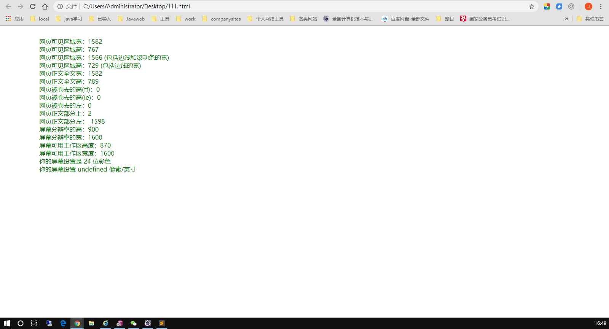
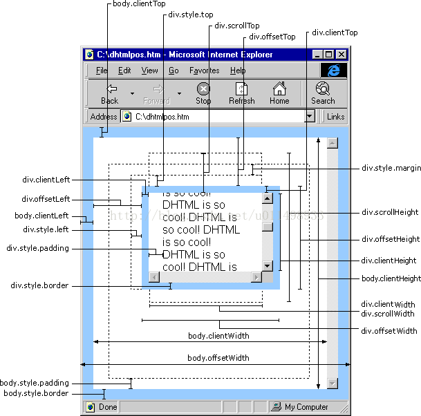

1、页面如图所示

2、Html代码
<div style="color:green;" id="html_info"></div>
3、JavaScript代码
1 <script type="text/javascript">
2 var info = "";
3 info += " 网页可见区域宽："+ document.body.clientWidth+"<br />";
4 info += " 网页可见区域高："+ document.body.clientHeight+"<br />";
5 info += " 网页可见区域宽："+ document.body.offsetWidth + " (包括边线和滚动条的宽)"+"<br />";
6 info += " 网页可见区域高："+ document.body.offsetHeight + " (包括边线的宽)"+"<br />";
7 info += " 网页正文全文宽："+ document.body.scrollWidth+"<br />";
8 info += " 网页正文全文高："+ document.body.scrollHeight+"<br />";
9 info += " 网页被卷去的高(ff)："+ document.body.scrollTop+"<br />";
10 info += " 网页被卷去的高(ie)："+ document.documentElement.scrollTop+"<br />";
11 info += " 网页被卷去的左："+ document.body.scrollLeft+"<br />";
12 info += " 网页正文部分上："+ window.screenTop+"<br />";
13 info += " 网页正文部分左："+ window.screenLeft+"<br />";
14 info += " 屏幕分辨率的高："+ window.screen.height+"<br />";
15 info += " 屏幕分辨率的宽："+ window.screen.width+"<br />";
16 info += " 屏幕可用工作区高度："+ window.screen.availHeight+"<br />";
17 info += " 屏幕可用工作区宽度："+ window.screen.availWidth+"<br />";
18 info += " 你的屏幕设置是 "+ window.screen.colorDepth +" 位彩色"+"<br />";
19 info += " 你的屏幕设置 "+ window.screen.deviceXDPI +" 像素/英寸"+"<br />";
20 document.getElementById("html_info").innerHTML = info;
21 </script>
4、细节

（图片来源于网络）
5、精确定位
HTML精确定位:scrollLeft,scrollWidth,clientWidth,offsetWidth
scrollHeight: 获取对象的滚动高度。
scrollLeft:设置或获取位于对象左边界和窗口中目前可见内容的最左端之间的距离
scrollTop:设置或获取位于对象最顶端和窗口中可见内容的最顶端之间的距离
scrollWidth:获取对象的滚动宽度
offsetHeight:获取对象相对于版面或由父坐标 offsetParent 属性指定的父坐标的高度
offsetLeft:获取对象相对于版面或由 offsetParent 属性指定的父坐标的计算左侧位置
offsetTop:获取对象相对于版面或由 offsetTop 属性指定的父坐标的计算顶端位置
event.clientX 相对文档的水平座标
event.clientY 相对文档的垂直座标
event.offsetX 相对容器的水平坐标
event.offsetY 相对容器的垂直坐标
document.documentElement.scrollTop 垂直方向滚动的值
event.clientX+document.documentElement.scrollTop 相对文档的水平座标+垂直方向滚动的量
IE，FireFox 差异如下：
IE6.0、FF1.06+：
clientWidth = width + padding
clientHeight = height + padding
offsetWidth = width + padding + border
offsetHeight = height + padding + border
IE5.0/5.5：
clientWidth = width - border
clientHeight = height - border
offsetWidth = width
offsetHeight = height